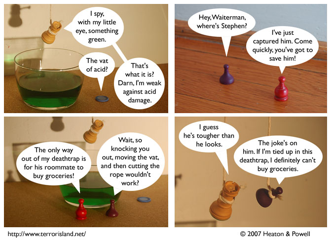

Strip #199
— Wednesday, September 19, 2007
Stephen’s main vulnerabilities are acid and bishops.
Notes, Thoughts, &c.
Ben’s Notes
Happy Talk Like a Pirate Day!

Lewis’s Notes
I started to write up some comments about supervenience, but it turns out that explaining that can be very boring, so I stopped. Instead, I will answer two questions that have been asked on the forums.
Q: Is that Jame? A: Yes, it is, but the lighting and props are creating the optical illusion known as “Jame Disguise” which makes Jame look slightly different than usual.
Q: Why would Jame be there? A: He is Waiterman’s sidekick. Probably, also, he wants to make sure his friends don’t die.